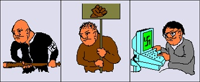

Szélsõséges az, aki a
társadalom számára szélsõséges véleményt képvisel – így fogalmazná meg a legtöbb ember,
hogy mit értünk a fogalom alatt. Politikailag nem egészen ez a helyzet. Ehhez még
hozzávehetjük azt is, ha valaki vagy egy csoport az alkotmányos rendet, államhatalmat a
törvényileg engedélyezett eszközökön is túllépve, esetleg erõszakosan kívánja vagy próbálja
megváltoztatni, attól függetlenül, hogy ezt milyen okból teszi. Magyarországon a
hagyományos szélsõjobboldaliságra a militáns, fajelméletet népszerûsítõ, baloldali
populista gazdaságpolitikát támogatás a jellemzõ. A mai nemzeti radikalizmus azért
nehezen kezelhetõ a civilek, a hatóságok és a média számára, mert bár a politikai
kommunikáció összemosni igyekszik a szélsõjobboldalisággal, valójában attól napról
napra egyre jobban távolodik. A részletek megvilágítása érdekében a 2000-es évek
magyarországi szélsõségeseirõl szóló felszínes kronográfiájával tesszük érthetõbbé a
jelenséget. Az alábbi felsorolás a Nemzetbiztonsági Hivatal információi és saját
tapasztalataim alapján készült, és vitaindító írásnak szánom.
Az NBH szerint
szélsõjobboldali mozgalom Magyarországon a trianoni döntést revideáló hattárrevíziót
akar, idegenellenességet hirdet, valamint a rendszerváltást nem tartja valódinak. Ez
feltételezhetõen a magyar lakosság jelentékeny részére igaz megállapítások lennének, de
egy fontos különbség, hogy a hivatal a nemzetiszocialista eszmék, azaz a történelmi
nácizmus modernizált formájában való hitet is ide sorolja. Ez a kitétel már csupán egy
maroknyi tömegre jellemzõ, és még kevesebben vannak, akik valóban kielégítõen ismerik
is e politikai idológiát. A gyakorlatilag 2006-ban megjelenõ és megerõsödõ nemzeti
radikalizmus nem ismert közös eszmerendszert, ezért kezdetben se nem támogatta, se nem
ítélte el ezeket a jellemzõket, a metszet csupán a nacionalizmus volt. 2008 végére a
radikalizmus látványos bomlásnak indult, mely szétesés az eltérõ véleményû kisebb
csoportosulások megjelenését fogja hozni a 2009-es évre. Ezek társadalmilag
jelentõsebb, a közvélemény formálására alkalmas rétegei elutasítják a klasszikus
szélsõjobboldaliság eszméit, de a történelmi Magyarország alkotmányát, illetve a
Kárpát-medence társadalmi-gazdasági egységességét szükségszerûnek tartják, esetleges
határváltoztatások nélkül is. A tapasztalat alapján a radikalizmusról mint szélsõségességrõl
beszélni hiba lehet, mivel a 2007-es évtõl mind szélesebb társadalmi réteget szólított
meg, ám 2008 végére teljesen elgyöngült, kreativitása megszûnt, szokásos akciói
parttalan erõszakként csapódtak le a közvélemény szemében, ezért a támogatottság
vélhetõen stagnál vagy kis mértékben csökken. A nem megfelelõ kommunikáció miatt a
radikalizmus csoportjainak alakuló eszmerendszerérõl a köznapi ember nem sokat tud, arról
csak az ismertebb szereplõk médiában bemutatott magatartása és véleménye, valamint az
ismertebb internetes oldalak stílusa és hitvallása alapján formálhat
véleményt.

A szélsõjobb
evolúciója az NBH szerint, 2002
A 2000-es évek
elején a szélsõjobboldali csoportosulások tagjainak száma radikálisan csökkent két
szervezetük betiltása, valamint a tagjaik elleni büntetõeljárások miatt (öt év alatt a
taglétszám 80%-kal csökkent). Fõleg a kevésbé képzett, iskolázatlanabb réteg szûnt
meg, emellett pedig ezek a csoportok a gazdasági ellehetetlenülést és a szociális
feszültséget helyezték politikai célú kommunikációjuk központjába. A továbbiakban is
tapasztalható a futballhuliganizmusnak nevezett nem politikai mozgalom tagjai, az ultrák
között ezen csoportok ideológiájának elfogadottsága (tûrése vagy támogatása). A Magyar Nemzeti
Arcvonal hagyományos szkinhedekkel szembeni engedékenysége miatt nézeteltérések miatt
2001-ben az ebbõl kivált személyek megalapították a Vér és Becsület Ifjúsági, Kulturális
Egyesületet (2005-ben ennek utódszervezete lesz a ma is mûködõ Pax Hungarica). A megszokott
módon a szélsõségesek tevékenysége puszta retorika marad, ám a XXI. század technikai
vívmányait, így az internetet egyre szélesebb rétegben kezdik propagandacélokra használni.
Megjelenik az NBH által információs szélsõségeseknek vagy magányos kiberharcosoknak nevezett
réteg, mely közép- vagy fõiskolás, átlagos vagy kissé magasabb társadalmi réteghez
tartozó, hétköznapi megjelenésében nem feltûnõ személy, kiknek vallott nézeteit ismerõseik
talán nem is ismerik. A 2000-es évekre a szélsõjobboldali ideológiák képviselõi a nyílt,
erõszakra felhívó gyûlöletkeltés helyett a burkolt véleményközlést választják,
felismerték, hogy propagandájuk a társadalom szélesebb rétegeit csak így érhetik el. Az
eddig a földrajzi távolságok miatt elszigetelt nemzetközi neonáci, rasszista, fasiszta
stb. csoportok a világháló segítségével kapcsolatot tudnak tartani egymással, így az
ideológiai népszerûsítésüket szolgáló kiadványok (fõleg CD-k) elõállításához és
terjesztéséhez szükséges anyagi terhelést külföldrõl befolyó támogatások is enyhíthetik
az elkövetkezõ években. A szélsõjobboldaliság publikus vagy félpublikus kulturális
tevékenysége kimerül néhány könnyûzenei koncertben, melynek két zenekar az legismertebb
résztvevõje (az Archívum és a Nemzeti Front). A rendezvényeket csoportjaik egymástól külön
hozzák létre, közös munkát nem végeznek. Mivel a fiatalság megnyerésére az ilyen koncertek
sikeresnek tekinthetõk, a titkosszolgálatok ezek ellenõrzésére különös hangsúlyt fektetnek.
Bár ezen csoportok radikalizmusa csökkenõ tendenciát mutat az 1990-es évek végén
tapasztalt mértékhez képest, rendezvényeiken még mindig összetûznek a rendõrséggel vagy más
csoportokkal (sokszor ugyanazon ideológiát valló, de más csapatban lévõ tagokkal),
gondolkodnak fegyver, valamint robbanószer szerzésén, de arra nem képesek, mivel nincsen
kiterjedt alvilági kapcsoltuk, valamint anyagi erõforrásaik meglehetõsen szûkösek.
Világosan látszott, hogy az elkövetkezõ években sem lesznek képesek megteremteni a
szükséges feltételeket egy társadalmilag is fajsúlyos mozgalom létrehozására.
A
szélsõbaloldali szervezetek a 2000-es évek elején kevésbé voltak jelentõsek. Fõleg kisebb
anarchista csoportjai léteztek, melyek propagandamunkán kívül mással nem foglalkoztak.
Bázisuk a társadalom perifériájára szorult, enyhén antiszociális fiatalok alkotják, akik
ideológiájuk középpontjába a globalizációellenességet teszik. Az anarchista, bolsevik és
alternatív (környezet- és állatvédõk) csoportok együttesen, tüntetõleg kívánnak a Világbank és
a NATO ellen föllépni. Bár korábban nem volt jellemzõ, az ezekkel kapcsolatos
rendezvényeken megjelenik egy néhány ezres tüntetõ tömeg, melyet ezen szervezetek tagjai
alkotnak. Többségük törvénytisztelõen tiltakozik, egy kisebb csoport ellenállása pedig
kirakatok betörésében, köztéri károkozásban ki is merül. Õk is fölfedezik az internet adta
lehetõségeket. A nemzetközi szélsõbaloldali mozgalmak kiképzõtáborokat nyitottak, fölkészültek
a rendõrséggel való összecsapásra és tevékenységükben a politikai mozgalmakra jellemzõ
elemek jelentek meg, de ezek a tények csak kis mértékben aktivizálták a hazai mozgalmakat,
valamennyivel szervezettebbé tették. A szélsõbaloldal zenei életének vezetõ egyénisége az
1990-ben mindenféle zenei elõképzettség nélkül megalakult
HétköznaPI CSAlódások (röviden: Picsa), melyet 1994-ben perbe fogtak közösség
elleni izgatás miatt a
Kössük fel! és a
Nem csak a szélsõjobboldalé a világ címû számaik szövegéért.
Az eljárás után a banda szövegezése átnyaltabbá vált. (Néhány évvel késõbb is
följelentették õket, de egyik ügyben sem marasztalták el a zenekart.) Bár csak egy szûk
szubkultúra által elismert zenei formációról van szó (mely legnagyobb sikerét a
Commandante címû számával érte el, illetve õk alkották a
náciellenes punkmozgalom himnuszának számító
Ostoba
címû nótát), mégis a Sziget nevû rendezvény állandó fellépõje, de társadalmi kockázatot
sosem jelentett.
2003-ra a szélsõjobboldali csoportok az egymás közötti
nézeteltéréseket tisztázták annak érdekében, hogy közös munkával szélesebb társadalmi
réteghez szólhassanak. Egészségmegõrzõként bemutatott tréningeket, kirándulásokat
szerveznek, valamint törvényes hagyományõrzõ szervezetként jelentik be a tagtoborzó
rendezvényeket. Finomodik a hazai nemzetiszocialisták külföldi kapcsolatrendszere, szóba
kerül nemzetközi koncertek magyarországi megrendezése is. A szakszolgálatok állandó
megfigyelésére válaszul a vezetõk megfelelõ konspiratív technikákat dolgoznak ki, így a
titkosszolgálat számára megnehezedik a csoportok kielégítõ megfigyelése. Ennek is köszönhetõ,
hogy ebben az évben Magyarország a nemzetközi náci csoportok egyik célországává válik.
Közben a magyar kormány elkezdi kidolgozni az elsõ gyûlöletbeszédtörvény-tervezeteket,
melyek az 1950-es évek óta jelenlévõ, holokauszttagadásnak vagy ezekben a körökben
Auschwitz-hazugságnak, esetleg holocsalásnak nevezett jelenségek ellen irányul. Az
elkövetkezõ években sem képesek a nemzetiszocialista, valamint hungarista csoportok a
megerõsödésre, de az ellenük indított eljárásokban kiszabott enyhe büntetések visszatartó erõt sem
jelentenek, így a létszámuk ezekben az években tartósan már nem is csökken. 2004. április
27-én megalakult a komoly politikai, jogi és szociológiai vitákat kiváltó nyilaskeresztes
Magyar Jövõ Csoport (MJCS). Az alapító, Bácsfi Diána (eredeti nevén: Bácsi Boglár Diána)
és az MJCS az évben a Nemzetbiztonsági Hivatal által megfigyeltek egyik központi alakja
volt. A csoport elsõ megjelenésekor, a trianoni döntés emléknapján nem kapott figyelmet.
Késõbb a Hatvannégy Vármegye Ifjúsági Mozgalom által szervezett IV. Magyar Szigeten lépett
volna fel, de szélsõségességükre hivatkozva kitiltották õket. A Magyar Nemzeti Arcvonal
sem volt képes azonosulni összetett ideológiai rendszerükkel. 2004. szeptember 11-én vette
õrizetbe a rendõrség Bácsfit közösségi elleni izgatás miatt, mivel egy médiaszereplése
során azt állította, nemzetiszocialista-hungarista államot kíván építeni, ám az ezt
ellenzõk egyben ellenségek is, akiket meg kell semmisíteni. A bûnismétlés lehetõsége miatt
a rendõrség a maximálisan megengedett hetvenkét óráig tartotta elõzetes letartóztatásban a
vezetõt. Szabadulás médiaeseménnyé vált, melyet a nõ mártírszerepének bizonyítékaként
értékelt, magát Szálasi Ferenc méltó követõjének tartotta. Késõbb is fõként
plakátragasztást végeztek, mivel a bejelentett rendezvényüket a várható magas részvételi
létszám, így a közlekedés aránytalan sérelme miatt megtiltották. A szervezet körül csapott
hírverés kellõ ismertséget, az emigrációból érkezõ anyagi támogatás pedig hátteret
jelentett a csoport számára, mely egyenruhában, árpádsávos zászlókkal kívánt vonulni a
nyilas hatalomátvétel évfordulóján. Ma is él az a nézet a Bácsfival korábban közös munkát
folytató és nem folytató jobboldali szervezetek egy részében, hogy tudatos, megrendelt
provokáció állt a csoport mögött. Ez már a mozgalom megjelenése elõtt, Bácsfi elsõ
feltûnése óta ismert elképzelés volt, több hungarista szervezet ügynöki munkát
feltételezett a nõ mögött. Gyakorlatilag valamennyi szervezet (Magyar Nemzeti Arcvonal, Blood
and Honour, Lelkiismeret '88 stb.) elhatárolódott tõle, munkáját károsnak és sokszor
megrendeltnek nevezték. A Bácsfiról készült pszichológiai profil és titkosszolgálati
kutatómunka alapján a jobbratolódásnak volt múltja. Gyermekkorában fõként Rousseau, Aquinoi
Szent Tamás, Adolf Hitler, Mussolini és Szálasi munkái nyomán vált tudatos
nemzetiszocialistává. 2000-tõl több társaság, köztük elitista-ultrajobboldali mozgalmak
tagja volt, de minidg rövid ideig. Átlagon felüli mûveltsége következtében kikristályosodott
eszmerendszere rendíthetetlen volt, alárendelt szerepet pedig nem tudott vállalni. Az
általa példaképnek tartott személyt formázva saját szervezetet indított. 2005 októberében
hivatalosan is bejelentette, hogy szakít a a szélsõséges eszmékkel, a késõbbiekben pedig
csak a mitológiával, valamint tanulmányaival kíván foglalkozni.
2003 és azt ezt követõ
évek a szélsõbaloldali szervezetek számára eseménytelennek bizonyultak. A Paksi Atomerõmû
meghibásodása utáni, valamint az iraki beavatkozás elleni demonstráción kívül semmi
említésre méltó nem történt. A nemzetközi anarchista szervezetek által a média figyelmének
felkeltése érdekében kívánatosnak nevezett erõszakosságot a hazai ultrabaloldaliak nem
vették át.
2006-ban a kormányfõ szeptember 17-én nyilvánosságra került, õszödi
beszédként megismert szövege tiltakozáshullámot indított. 18-án a tiltakozás erõszakos
periódusú lett, ahol a radikálisok mellett szélsõséges akcióformák is megjelentek, amelyek
tömegbázisuk növelését a kormányellenes jelszavak skandálásában látták. A tömeg összetétele
nagyon vegyes: a politikától eddig elzárkozó vagy akár enyhén baloldali kötõdésû emberektõl
kezdve az újradikálisokon át a valódi szélsõjobboldalig sokan, különbözõ szervezetek is
képviseltették magukat, valamint újak alakultak az elkövetkezõ napokban. Az október már a
konszolidáció idõszaka volt: míg Toroczkai László forradalmi vezérként kívánt tevékenykedni,
addig Budaházy György olyan kijelentéseket tett, melyek az ügyészség szerint kimerítették az
alkotmányos rend erõszakos megdöntésére irányuló kísérlet gyanúját. Toroczkai a vidék
megmozdításában látta a lehetõséget, ezért országjárásra indult, miközben a budapesti Kossuth
téren a tüntetõk kifogytak a politikai mondanivalóból. Egyre kevesebb ember érkezett a
tüntetésre, míg már csupán néhány száz fõs tömeg maradt. Ekkor érkezett el a nemzeti ünnep,
mely során súlyos összecsapások, túlkapások és 130 rendõrségi õrizetbe vétel történt. A
nemzeti ünnepen a régi és új szervezetek nem voltak képesek egy társadalmi szintû megmozdulás
létrehozására, ezért az elkövetkezõ napokban néhány szervezetük megszûnt vagy összeolvadt,
illetve további tüntetéseket, sõt alkotmányozó nemzetgyûlésnek nevezett összejöveteleket
tartottak, melyek résztvevõinek száma arányaiban ritkán haladta meg az ezer fõt. A
változtatáshoz és a figyelem fölhívásához szükségesnek tûnt az erõszakos fellépés támogatása.
Ez az elem hasonlít a korábbi szélsõjobboldali megoldási tervekhez, de fontos hangsúlyozni,
hogy a tüntetések, tömegmegmozdulások során a nagyobb réteg békésen viselkedett, a
rendbontók pedig nem egy egységes idológia mellé felsorakozott, utasított harcosok voltak.
Bár a politika és a hatóságok a szélsõségek megjelenésének értékelték az ezekben a
hónapokban történt eseményeket, azok valójában csak abból a szempontból szélsõségesek, hogy
eddig nem ismert módon jelentkezett társadalmi ellenállást és feszültséget közvetítetnek.
Szélsõségességük legföljebb viszonylagos erõszakosságukban érhetõ tetten. A
viszonylagosság arra értendõ, hogy az erõszakos fellépést a tüntetõk reakcióként
ideologizálják: a kormányfõi beszédét, illetve az MTV szerkesztõjének elutasítását (nem
erõszakos akcióra erõszakos reakció), késõbb pedig a rendõri oszlató fellépését (erõszakos
akcióra erõszakos reakció) okolták az erõszakért.
2007 a különféle félkatonai
szervezetek és gárdák megalakulásának idõszaka. Ezen önvédelminek vagy hagyományõrzõnek
nevezett egyesületek a cigánybûnözéssel kapcsolatos retorikájukban nem jellemzõ, hogy
erõszakos fellépéssel fenyegetnének, de burkoltan jelzik, hogy fegyveres ellenállásra is
hajlandóak lennének. Az elmúlt évekhez hasonlóan most is fölmerül a kommunikációban a fegyveres
gyakorlás kérdésköre, ezt évekkel korábban a Hatvannégy Vármegye köreibõl is jelezték, ám
akkor ez csupán félrevezetés volt. Mivel ezek a csoportok (függetlenül attól, hogy a valódi
szélsõségesekrõl vagy a konszolidáltabb vonalról beszélünk-e) még mindig nem voltak képesek
megbízható, tartós kapcsolatot kialakítani a fegyvercsempészekkel, nem rendelkeznek nagy
méretû fegyverarzenállal. Bár az évek során több helyrõl érkezett hír kisebb fegyveres
sejtek kialakulásáról, az utcai harcokat csak házilag készíthetõ Molotov-koktélokkal,
acélgolyós csúzlikkal vívják, a legkomolyabb bevetett fegyver néhány kukoricagránát. A
gárdák között is sok a különféle vonal: míg a Jobbik Magyarországért Mozgalom által éltre
hívott Magyar Gárda fõként politikai propagandatevékenységet fejt ki (vért ad,
parlagfûirtást és hadisírgondozást hirdet meg, rendezvényeket biztosít), más csoportok
valódi, akár erõszakos fellépést hirdetnek. Utóbbiak kis létszámúak és nemzetbiztonsági
megfigyelés alatt állnak, aktív, társadalomra ható tevékenységük nem ismert. Bár a média a
szélsõségesek csoportjának drasztikus növekedését vizionálja, a 2007. február 10-i Becsület Napján
alig több mint ezer szimpatizáns jelent meg a modern nemzetiszocialisták gyûlésén, és ezen
személyek nagy része is külföldrõl érkezett. Az elmúlt évek alig néhány százas rendezvénye
alig nõtt, ez pedig azt támasztja alá, hogy a radikálisoknak nevezett új jobboldali politikai
formáció köreiben nem általánosan jellemzõ a II. világháborús Németország politikai
eszmélyének követése és maradéktalan helyeslése. A társadalmi támogatottság hiánya volt
érezhetõ a radikális táborban, melyet a média elhallgató és torzító hozzáállásával
magyaráztak. Az bizonyos, hogy az aktív, véleményüket felvállaló támogatók száma jócskán
elmaradt a szükségestõl és elvárttól, ezért a szubkultúra önmagába fordulva, saját
erõforrásait fölhasználva próbált fejlõdni. Országos demonstrációsorozatot szervezett a
Toroczkai által 2006 õszén életre hívott Mi Magunk Mozgalom (mely az IRA politikai szárnya
nevének, a Sinn Feinnek magyarosítása). A radikálisok között elterjedt nézet volt, hogy a Mi
Magunk az elsõ magyar terrorszervezetként akár robbantásos akciókat is vállalni fog, ezt a nézetet
pedig a vezetõk nem kívánták egyértelmûen cáfolni. Az esetleges terroreszközök alkalmazása
már alkalmas a szélsõségesség jelzõjére, ezért itt a radikalizmus és az erõszakos
szélsõségek közötti összecsúszás esélye merült föl, de a Mi Magunk nem követett el ismert
törvénysértést, bár a titkosszolgálatok információi szerint szimpatizánsai erõszakos, többek
között Molotov-koktélos támadásokat terveztek a rendõrök ellen. Egy ilyen beszélgetés nyomán
vettek õrizetbe a Hatvannégy Vármegye Ifjúsági Mozgalom egyik vidéki alapítóját, aki
elismerte, hogy házi robbanószerkezetek használatát tervezte a rendõrök ellen, ezért a
bíróság elítélte. Áprilisban a Mi Magunk MÚK (Márciusban Újra Kezdjük) nevû, valamivel több
mint ezer fõt megmozgató gyûlésén Toroczkai László és Budaházy György bejelentik az
árnyékország, Hunnia létrehozását, melyhez harcosok toborozását is kilátásba helyezik. Hunnia
azóta inkább szimbólummá vált, a virtualitásban létezik, konkrétan ehhez a kezdeményezhés
köthetõ, a társadalom széles rétegei számára ismertté vált tevékenység nem ismert. A
szakszolgálat e csoportokat az egyébként békés személyeket tartalmazó tüntetésekre ráépülõ,
azokat erõszakos mederbe sodró elemeknek minõsítik, akik növelik a társadalom rétegei és a
tüntetõk közötti szakadékot. Ez az elgondolás elég érdekes, hiszen azt sugallja, hogy e
csoportok megnehezítik a radikálisok és a társadalom egyéb rétegei közötti kapcsolat
létesítését. Ezt az erõszakosságot szintén a Nemzetbiztonsági Hivatal a politikai
cselekvõképességük kudarcának okaként is azonosítja, mivel az erõszakos, ezért szélsõségesnek
nevezhetõ dialógusokkal a tüntetõk nagy része nem képes azonosulni, így a különbözõ csoportok
szembenállása már ekkor megkezdõdött.
2007-re a szélsõbaloldali csoportok is
visszatértek a titkosszolgálatok figyelmének területére. Míg a radikálisok egységes
eszmerendszerének hiánya miatt ellentétek alakulnak ki, egyesek az erõszakosságot hirdetik,
de nem lépnek föl valódi, elrettentõ erõvel, addig a Baloldali Front-Kommunista Ifjúsági
Szövetségnek elõadást tartott az ETA nevû baszk terrorszervezet fedõszervezetként mûködõ
Batasuna párt egyik tagja. Ez a kapcsolat azt jelentheti, hogy a hazai szélsõbaloldal egyre
tartósabb nemzetközi kapcsolatokat ápol, mely az eddigi törvénytisztelõ és ismeretlen
akcióikat a világon már megszokott erõszakosabb lépésekig vezetheti õket. Ez a hullám még a
2008 végén kitört görögországi anarchista utcai összecsapások idején sem érezhetõ
Magyarországon, de a görög és nemzetközi anarchista aktivistacsoportok egyik vezetõje, Vlantó
éppen a magyar fõvárosból, Budapestrõl irányítja a harcokat és a propagandát.
Miközben
a figyelem központja a szélsõjobboldalra irányul, nem egészen világos, hogy meddig terjed a
valódi szélsõség és hol indul a radikalizmus. Míg a radikálisok nagy része elveti a
fajelméletet, egy másik részük a jelenlegi Alkotmányt történelmi okokból elveti. Egyesek az
államrend megváltoztatását követelik, míg mások megelégednének a kormányváltással is.
Hasonló ellentétek mutatkoznak az erõszakosság elfogadásában és elítélésében is. Egy biztos:
a radikalizmus tagjai és elismert vagy de facto vezetõi, hangadói 2008 végére szakadni
kezdtek. Ez a változás az eszmerendszer kikrisztályosodásához vezethet. Míg korábban egy
táborban megfért az, aki egy népcsoportot hibáztat az ország bajaiért és az is, aki egy-egy
politikust vagy pártot, 2009-re nem valószínû, hogy a Szálasi Ferencet követõk egy táborban
maradnak például Horthy Miklós híveivel vagy a királyságpártiakkal. A hasadás nem feltétlenül
jelent gyöngülést, hiszen látszik, hogy a radikalizmus a társadalmi közönség számára zavaros
és tisztázatlan háttérrendszere, elvei miatt nem hozott tartós, könnyen bevethetõ tömeget.
Az erõszakkal való fenyegetés nem nyert nagy támogatottságot, a változáshoz pedig ez vagy
valódi erõszak szükséges, ez azonban eddig nem központilag jelent meg. A 2008-ban fölbukkant
terrorfenyegetések a Magyar Nyilai Felszabadító Hadsereg nevû, nem ismert összetételû
csoporton kívül nem köthetõk egy konkrét politikai csoporthoz, de ez a szervezet sem
említhetõ a nemzetközi terrorcsoportokkal egy lapon. A szélsõjobboldal a radikalizmussal csak
idõlegesen került közös útra: némely alapvetõ elvükben van átfedés (ilyen például a trianoni
békediktátum értékelése: ám míg egyikük erõszakos határrevíziót, a másik csak ésszerû
újragondolást, Kárpát-medencei gazdasági egységet követel), de sok a föloldhatatlan ellentét.
A szélsõjobboldal tagtoborzásra használhatta a radikális rendezvényeket, de végül a
résztvevõk számára világossá vált, hogy egy személy vagy mozgalom pontosan mit képvisel, és
eszerint rendezõdtek a viszonyok. Mindeközben a szélsõbaloldal rövid eltûnése után
háttérszervezésbe kezdett, mely nemzetközi terrorszervezetek képviselõi és szélsõbaloldali
vezetõk meghívásával vált láthatóvá. Bár nem ismert, hogy milyen politikai lépést
tervezhetnek ezek a csoportok, elmondható, hogy a rendszerváltás óta nem voltak képesek
olyan tömegbázist építeni, mint a szélsõjobboldal, mely semmiképpen sincsen teljes átfedésben
a még nem pontosan definiált és a saját köreiben is vita tárgyát adó nemzeti
radikalizmussal.